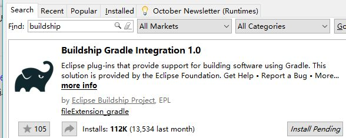
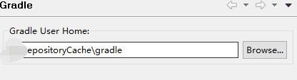
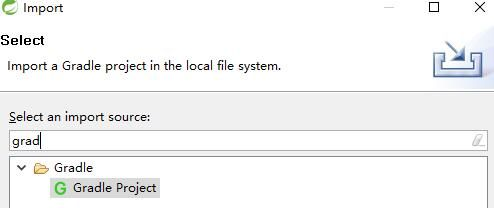
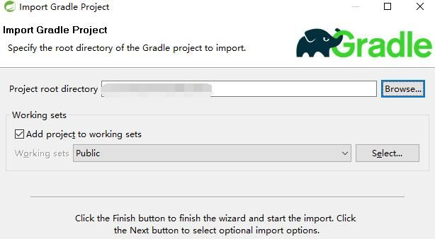
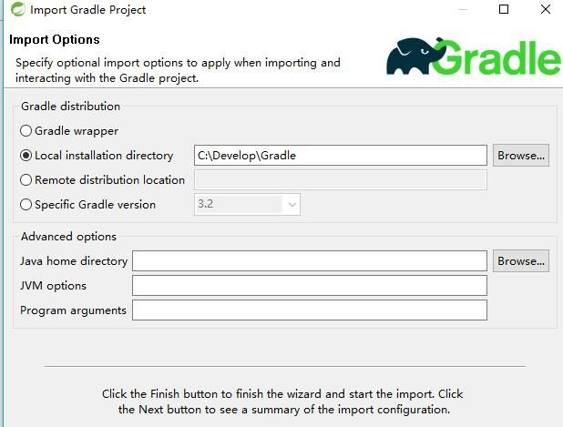
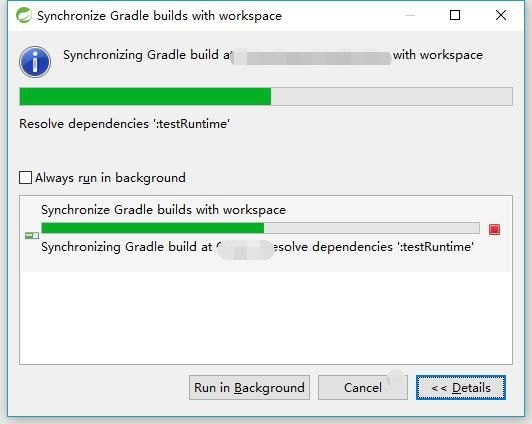
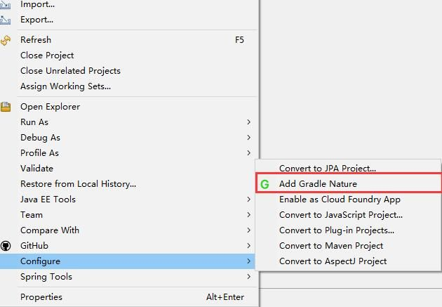
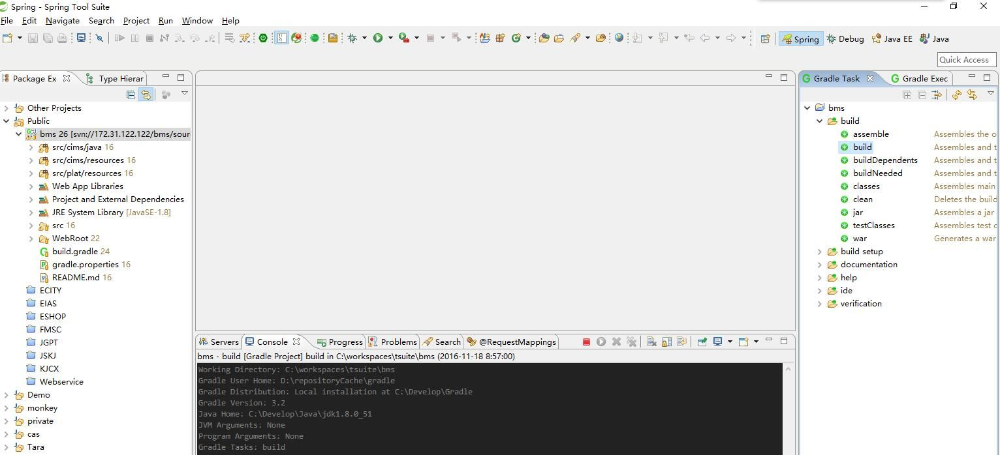
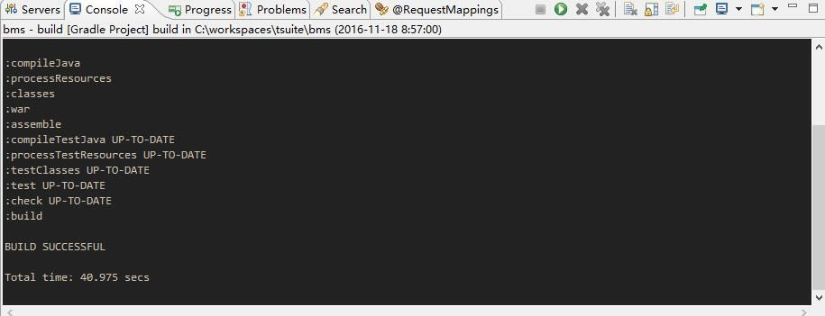
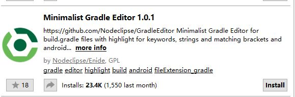

安装
无论你使用的是 eclipse/sts/myeclipse 还是任何eclipse的变种,可以通过点击Help->eclipse marketplace去插件市场搜索buildship然后点击install进行安装,此过程完全傻瓜操作,不赘述.

如果你是一名传统程序猿习惯通过site安装,可以参考下面的表格通过点击Help->Install New Software进行手动安装
| Eclipse Version | Type | Update Site |
|---|---|---|
| Neon (4.6) | release | http://download.eclipse.org/buildship/updates/e46/releases/1.0 |
| milestone | http://download.eclipse.org/buildship/updates/e46/milestones/1.0 |
|
| snapshot | http://download.eclipse.org/buildship/updates/e46/snapshots/1.0 |
|
| Mars (4.5) | release | http://download.eclipse.org/buildship/updates/e45/releases/1.0 |
| milestone | http://download.eclipse.org/buildship/updates/e45/milestones/1.0 |
|
| snapshot | http://download.eclipse.org/buildship/updates/e45/snapshots/1.0 |
…
更早版本可以参考上面两条自己修改地址 具体方式只需要把你所需的eclipse版本中间的小数点去掉即可 修改e45/e46参数.
配置
安装完毕后,点击Window->perferences->gradle进行一些配置操作,其实就一个配置 就是配置下本地缓存目录

导入
选择Gradle项目进行导入

选择需要进行导入项目的根目录

进行一些适当的配置，描述比较简单，这里不做翻译，一般情况下选择本地安装的gradle版本即可

经过一段时间的等待（验证脚本、下载依赖）后，导入即可完成。

创建
按照常规方式创建项目,创建时选择gradle project即可,创建向导与导入向导如出一辙,不再赘述
转入
如果想为项目添加Gradle支持,请在需要添加的项目上右键->Gradle->Add gradle nature即可

配置
导入成功后找到gradle窗格，可见Gradle task和Gradle exec两个页签,其中task页签列出了所有的可执行的任务,exec页签则会在执行任务后展示执行日志


当然控制台也会打印执行的详细信息

刷新依赖(新增/修改/删除依赖导入)
对脚本做了编辑之后，记得在项目上点击右键->Gradle->refresh Gradle project刷新下依赖。
补充
插件自带的编辑器是没有语法着色的,可以安装下面这个,可以对关键字进行高亮展示.当然,语法提示的话,肯定是没有的
